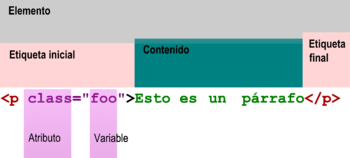
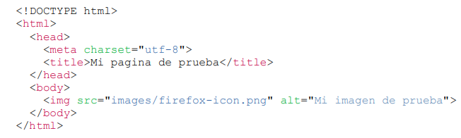

PÁGINA 3
HTML
¿Que es?
HTML hace referencia al lenguaje de marcado para la elaboración de páginas web. Es un
estándar que sirve de referencia del software que conecta con la elaboración de páginas
web en sus diferentes versiones, define una estructura básica y un código para la
definición de contenido de una página web.
Ventajas y Desventajas
1-Ventajas:
Sencillo que permite describir hipertexto
Texto presentado de forma estructurada y agradable.
No necesita de grandes conocimientos cuando se cuenta con un editor de páginas
web o WYSIWYG.
Archivos pequeños.
Despliegue rápido.
Lenguaje de fácil aprendizaje
Admiten todos los exploradores
2-Desventajas:
Lenguaje estático
La interpretación de cada navegador puede ser diferente.
Guarda muchas etiquetas que pueden convertirse en “basura” y dificultan la
corrección.
El diseño es más lento.
Las etiquetas son muy limitadas
Elementos
Los elementos tienen dos propiedades básicas: atributos y contenido. Cada atributo y
contenido tiene ciertas restricciones para que se considere válido al documento HTML. Un
elemento generalmente tiene una etiqueta de inicio y una etiqueta de cierre.

Atributos
En su mayoría de los atributos de un elemento son pares nombre-valor, separados por un
signo de igual «=» y escritos en la etiqueta de comienzo de un elemento, después del
nombre del elemento.
El valor puede estar rodeado por comillas dobles o simples, aunque ciertos tipos de
valores pueden estar sin comillas en HTML.
Etiquetas HTML
html : define el inicio del documento HTML, le indica al navegador que lo que
viene a continuación debe ser interpretado como código HTML.
script: Incrusta un script en una web
head: Define la cabecera del documento HTML
title: define el titulo de la pagina
link: para vincular el sitio a hojas de estilo o iconos
style: para colocar un estilo interno de la pagina
meta: para metadatos como la autoría o la licencia.
body : Define el contenido principal o cuerpo del documento
article: Representa una composición auto-contenida en un documento,
página, una aplicación o en el sitio, que se destina a distribuir de forma
independiente o re-utilizable.
h1 a h6: encabezados o títulos del documento con diferente relevancia.
table: define una tabla
a: hipervínculo o enlace.
div: división de la pagina
img: imagen
li ol ul>: etiquetas
b: texto en negrita
i: cursiva
s: tachado
u: subrayado
main: división estructural de la pagina
span: sirve para diferenciar de un texto a otro
br: Sirve para provocar un salto de linea
Ejemplo HTML

Bibliografia
https://www.ticarte.com/contenido/que-son-los-lenguajes-de-marcas
https://www.ecured.cu/Sistema_de_Gesti%C3%B3n_de_Informaci%C3%B3n
https://es.wikipedia.org/wiki/Sistema_de_planificaci
%C3%B3n_de_recursos_empresariales
https://www.mastermarketingdigital.com/everriculum/2014/09/17/cuales-son-lascaracteristicas-principales-del-html/
http://www.sidar.org/recur/desdi/mcss/tareas/20011206/slide11-0.html
https://desarrollowebcarloseduardo.wordpress.com/2017/05/10/caracteristicas-de-xhtml/
https://www.ecured.cu/XML#:~:text=XML(siglas%20en%20ingl%C3%A9s%20de,de
%20comunicaci%C3%B3n%20digital%20en%20general.
https://joedicastro.com/pages/markdown.html
https://es.slideshare.net/jelabra/xpath-76241005
https://www.adictosaltrabajo.com/2009/02/26/teoria-xpath/
https://sites.google.com/a/elorrieta-errekamari.com/marcas/u7-almacenamiento-deinformacion-en-formato-xml/3-xquery
https://es.wikipedia.org/wiki/HTML
https://yourcodeweb.wordpress.com/2017/02/22/ventajas-y-desventajas-de-html/